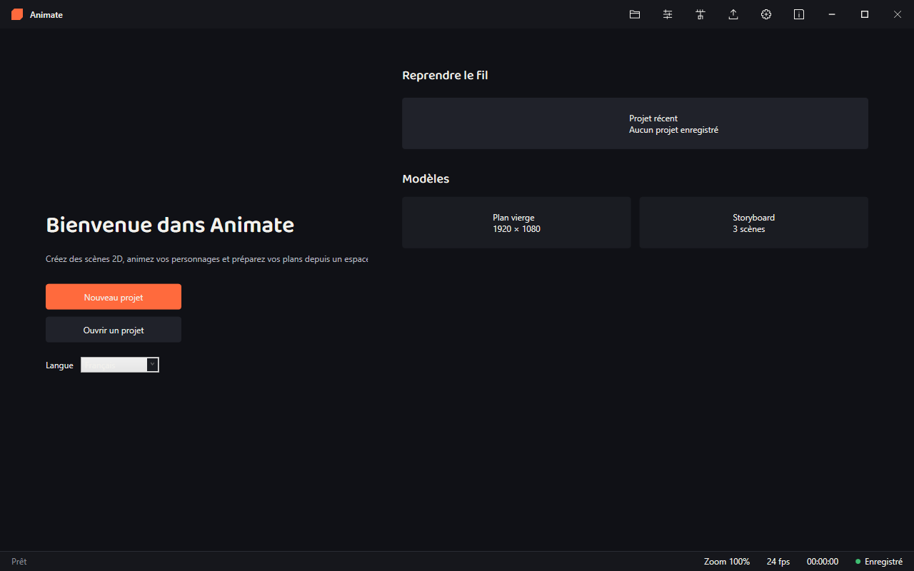
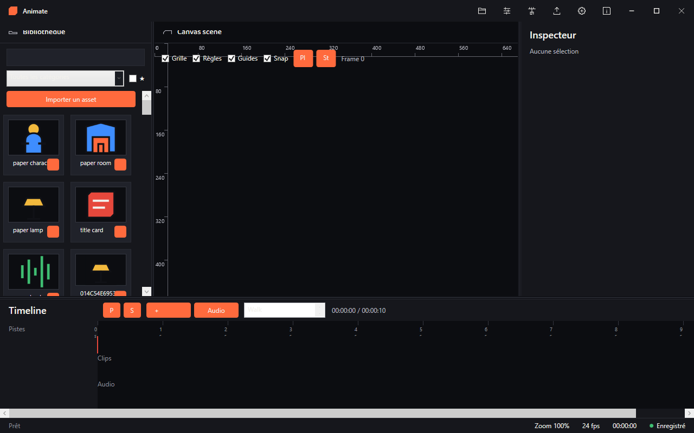
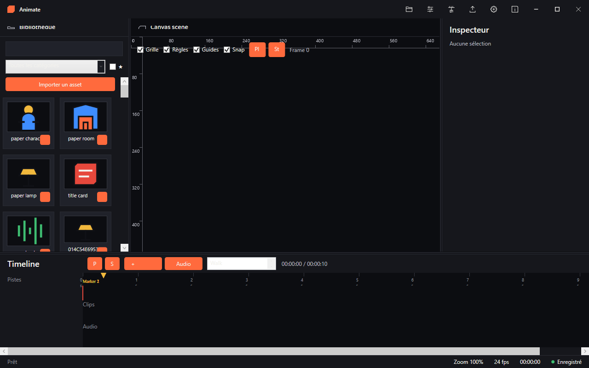
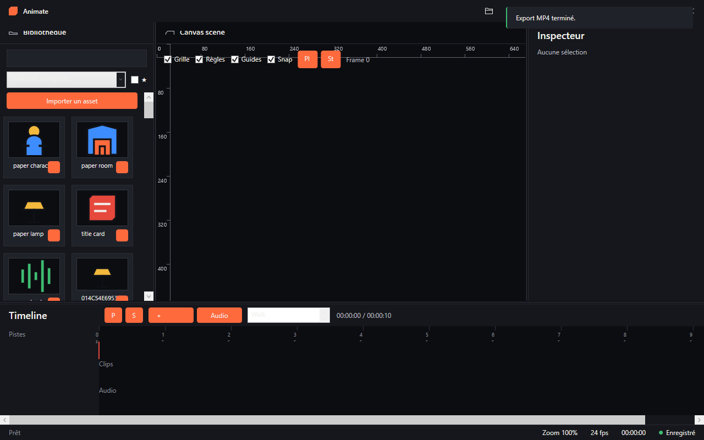

Composez des scènes à partir d'une bibliothèque d'assets, animez vos personnages sur une timeline à keyframes, puis exportez en vidéo MP4. Gratuit.




Personnages, décors, objets, texte/FX et audio. Recherche, catégories, tags, favoris et import de vos propres SVG / PNG.
Compositing SVG et bitmap par z-index, transformations, opacité, masques de découpe, grille, règles, guides et snapping. Rendu au-delà de 60 fps sur un plan chargé.
Pistes par calque, interpolations linéaire / easing / stepped, lecture temps réel, marqueurs de scène, audio synchronisé et lip-sync simplifié.
Édition fine des transformations, de l'opacité, de la recoloration des assets vectoriels et des effets plats (ombre portée, contour).
MP4 H.264/AAC via FFmpeg embarqué, mixage audio avec volume et fondus, presets 480p / 1080p, file d'attente et export d'image fixe.
Format .animate JSON versionné, auto-save récupérable,
undo/redo global. Interface française et anglaise, changement de langue
à chaud.
Animate-<version>-Setup.exe depuis la page Releases..animate.Animate est distribué en Freeware : l'exécutable et les ressources de déploiement sont fournis, le code source ne l'est pas. L'encodage vidéo s'appuie sur FFmpeg (mention légale complète dans l'onglet À propos du logiciel). Polices Baloo 2 et JetBrains Mono sous SIL Open Font License 1.1.